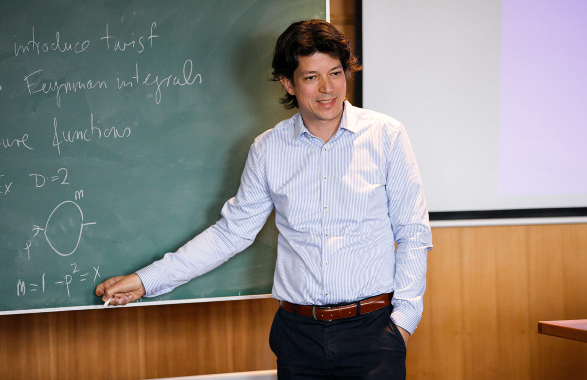
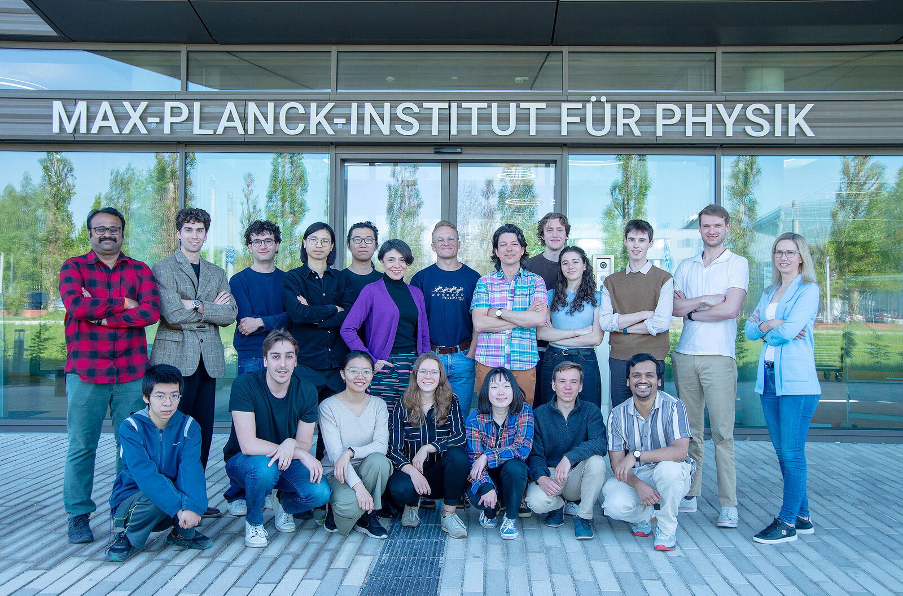

Research
Scattering amplitudes connect quantum field theory to collider experiments such as the LHC, and the same methods are increasingly relevant for gravitational-wave physics. We develop new mathematical techniques to analyze these processes — and often the mathematics turns out to be as beautiful as the physics.

Main directions
Methods for Feynman integrals and cosmological correlators
Differential equations, canonical forms, and the function theory underlying quantum-field-theory predictions — with applications reaching from particle physics to correlators in cosmology.
Multi-loop Feynman integrals and scattering amplitudes
Precision computations for collider physics: evaluating amplitudes at high loop order, including state-of-the-art results for five- and six-particle scattering in QCD.
Positive geometry
A new area at the interface of algebraic geometry, combinatorics, and physics: geometric objects — such as the amplituhedron — that encode physical observables directly, developed within the ERC Synergy project UNIVERSE+.
The group

Our department comprises about 15–20 researchers — PhD students, postdocs, and long-term visitors. The range of topics is broad: from precision QCD computations for collider physics, through the mathematics of Feynman integrals and special functions, to positive geometry, cosmological correlators, string theory, and connections to gravitational-wave physics. An overview of the department and its members can be found on the MPP Quantum Field Theory pages. Interested in joining? See Join & collaborate.
Research highlights
-
Canonical differential equations for Feynman integrals
-
Bootstrapping six-gluon QCD amplitudes
-
The full four-loop cusp anomalous dimension in N=4 super Yang-Mills and QCD
-
Solvable relativistic hydrogenlike system in supersymmetric Yang-Mills theory
-
Positivity properties of scattering amplitudes
Workshops organized
Save the date: Amplitudes 2027
Summer School, Mainz (July 19–23) · Conference, Munich (July 26–30).